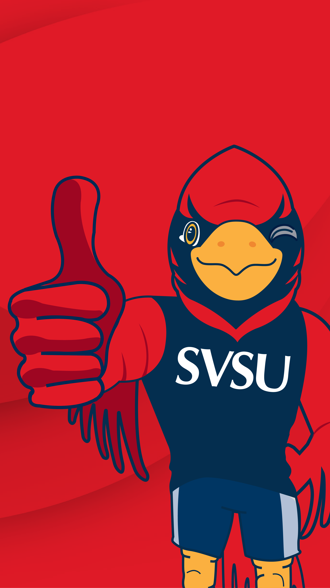
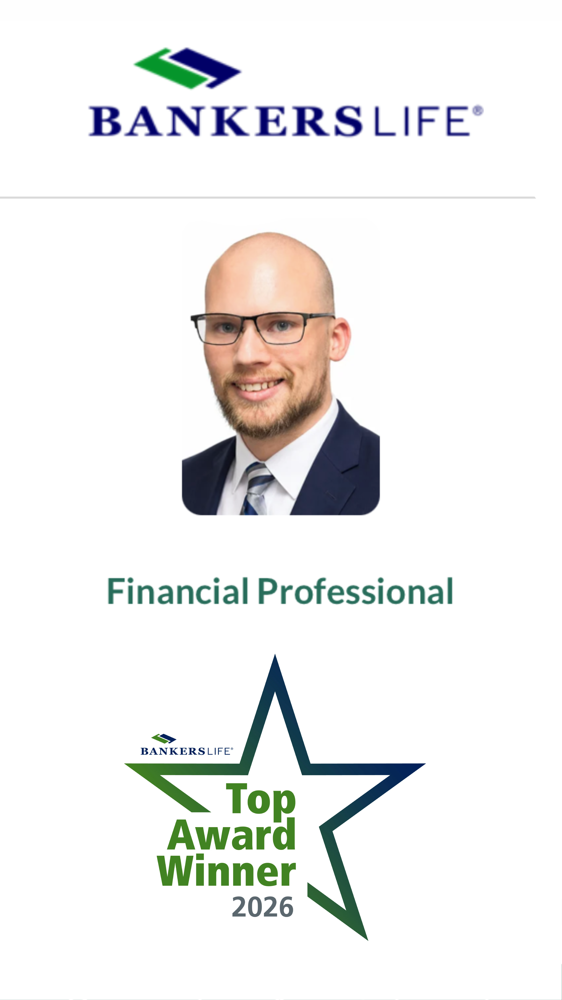
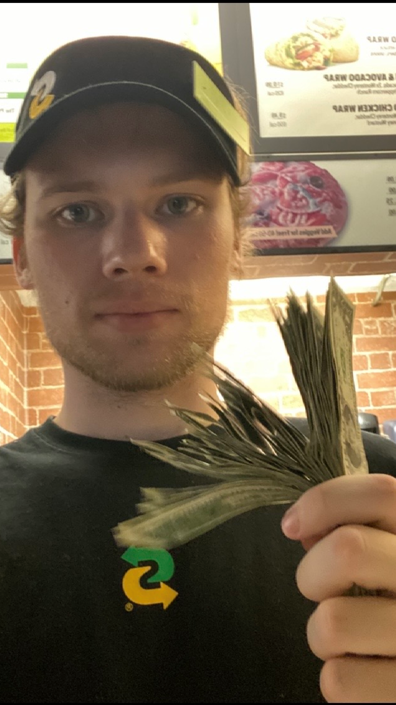

About Me
Software Developer & Problem Solver
I am a Computer Science graduate from Saginaw Valley State University with a strong interest in software development, systems, and understanding how technology works from the application level down to the underlying hardware.
My background includes software engineering, quality assurance, databases, networking, artificial intelligence, game development, embedded systems, and low-level programming. I enjoy projects that require me to understand a difficult problem, break it into smaller pieces, and build a working solution.
Education
My academic background and the experiences that shaped my approach to software development.

Saginaw Valley State University
I originally began my college education in Electrical Engineering before discovering that I was more interested in the software, logic, architecture, and problem-solving side of technology.
I ultimately switched to Computer Science, where I was able to explore software engineering, algorithms, databases, networking, artificial intelligence, systems programming, and application development.
My senior capstone gave me the opportunity to take on a leadership role as the QA Technical Lead for a real client project, combining technical work with communication, organization, and software quality assurance.
Activities & Organizations
Outside the classroom, I stayed involved in hands-on student organizations that let me apply what I was learning in different ways.
SAE Formula Racing
Collaborated across electrical, mechanical, and software teams to help prepare a competition race car, troubleshooting real-world problems under tight deadlines and learning how different engineering systems work together.
Game Design Club
Contributed gameplay ideas and design concepts while collaborating with other members to evaluate, prototype, and refine ideas into practical game mechanics.
Professional Experience
Experience outside the classroom has helped me develop communication, responsibility, and the ability to work directly with people.

Bankers Life
My current professional experience has given me a very different perspective from my technical education. Rather than working exclusively with software, I work directly with clients to understand their needs, explain complicated information, and help them navigate important financial decisions.
- Communicate complex insurance and retirement concepts clearly with clients.
- Build professional relationships through direct conversations and personalized service.
- Identify client needs and explain potential solutions in a way that is understandable and practical.
- Manage my own prospecting, scheduling, follow-up, and client communication.

Subway
Before starting my current career, I worked at Subway all through college. It was my first real job juggling a fast pace with a full course load, and it taught me a lot about staying organized and steady when things get busy.
- Kept up with a steady rush of customers — often 200+ a day — without letting speed get in the way of accuracy or a good attitude.
- Trained new hires and helped them get comfortable with the pace and the routine.
- Helped the store earn a 99/100 health inspection score by staying on top of cleanliness and food safety day to day.
- Worked closely with coworkers to keep things running smoothly, especially during rushes.
What I Bring
A combination of technical experience, curiosity, leadership, and communication.
Problem Solving
I enjoy breaking complicated problems into smaller pieces, understanding the underlying cause, and developing practical solutions instead of only treating the symptoms.
Technical Range
My projects have exposed me to languages and environments including C, C#, Java, Python, JavaScript, SQL, Linux, networking, embedded systems, and Wii homebrew development.
Leadership
I am comfortable taking ownership of technical work, organizing tasks, helping teammates through problems, and stepping into leadership roles when a project needs direction.
Curiosity
Many of my personal projects come from simply wanting to understand how something works. That curiosity has led me into areas ranging from AI agents to operating systems, graphics, and hardware.
Communication
Working directly with clients and teammates has taught me how to explain technical ideas clearly, listen to different perspectives, and keep projects moving toward a shared goal.
Adaptability
I have worked across very different technical environments, and I am comfortable learning unfamiliar tools and concepts when a project requires them.
Featured Projects
A selection of larger projects that demonstrate my experience across software engineering, systems, AI, graphics, and application development.
Other Projects
Linux Kernel Module
To better understand how operating systems function at a low level, I explored development within the Linux kernel environment. This project focused on interacting directly with core system components rather than user-space applications.
I developed the module in C while working with memory access, kernel structures, system-level debugging tools, and the constraints of kernel development.
Simulation & Systems Experiments
I explored simulation development to better understand how systems evolve over time and how individual components interact within defined environments.
These projects involved rule-based logic, state management, interaction systems, and performance experimentation.
Collaborative Development Projects
Throughout my academic experience, I participated in multiple team-based software and game development projects. These environments emphasized collaboration, adaptability, and shared ownership.
I contributed through feature development, debugging, design discussions, and system integration while working with teammates toward shared deadlines.